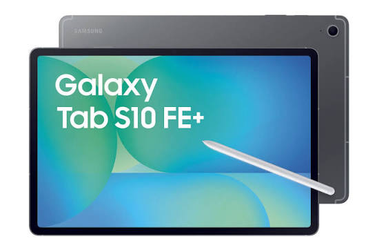
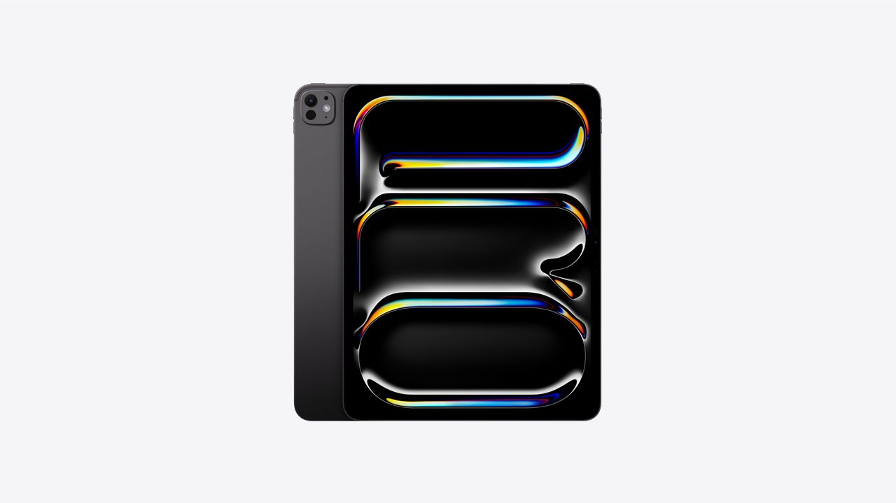
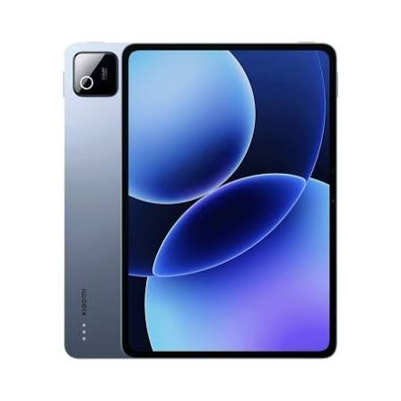

Die allerbesten Tablets auf dem Markt
Du suchst ein neues Tablet, weißt aber nicht, welches am besten zu dir passt? Ob zum Streamen, Zeichnen, Arbeiten oder für die Schule: Wir haben die aktuell beliebtesten Modelle für dich verglichen. Hier findest du die wichtigsten Infos auf einen Blick, damit du schnell und einfach die richtige Entscheidung triffst.
| Bild | Beschreibung |
|---|---|
|
 |
Galaxy Tab S10 FE+ (13,1")Das große Tablet von Samsung bietet ein riesiges Display, das sich perfekt für Filme, Serien und Multitasking eignet. Der S Pen ist bereits im Lieferumfang enthalten und eignet sich super für Notizen im Unterricht. Ein starkes Gesamtpaket zu einem fairen Preis. |
|
 |
IPad ProDas iPad Pro ist Apples Topmodell und richtet sich an alle, die maximale Leistung wollen. Das hochwertige Display und der schnelle Prozessor machen es ideal für Bildbearbeitung, Videoschnitt und kreatives Arbeiten. Dafür muss man allerdings auch tiefer in die Tasche greifen. |
|
 |
XIAOMI Pad 8 ProDas Xiaomi Pad 8 Pro überzeugt mit einem hervorragenden Preis-Leistungs-Verhältnis. Flüssiges Display, ordentliche Leistung und ein schlankes Design machen es zu einer echten Alternative zu den teureren Marken. Perfekt für alle, die viel Tablet für wenig Geld wollen. |
Worauf solltest du beim Kauf achten?
Bevor du dich für ein Tablet entscheidest, solltest du überlegen, wofür du es hauptsächlich nutzen möchtest. Wichtig sind vor allem die Displaygröße, die Akkulaufzeit, der Speicherplatz und das Betriebssystem. Wer viel schreibt oder zeichnet, sollte außerdem darauf achten, ob ein Stift oder eine Tastatur unterstützt wird. Und natürlich spielt auch der Preis eine große Rolle: Nicht immer ist das teuerste Gerät auch das beste für dich.